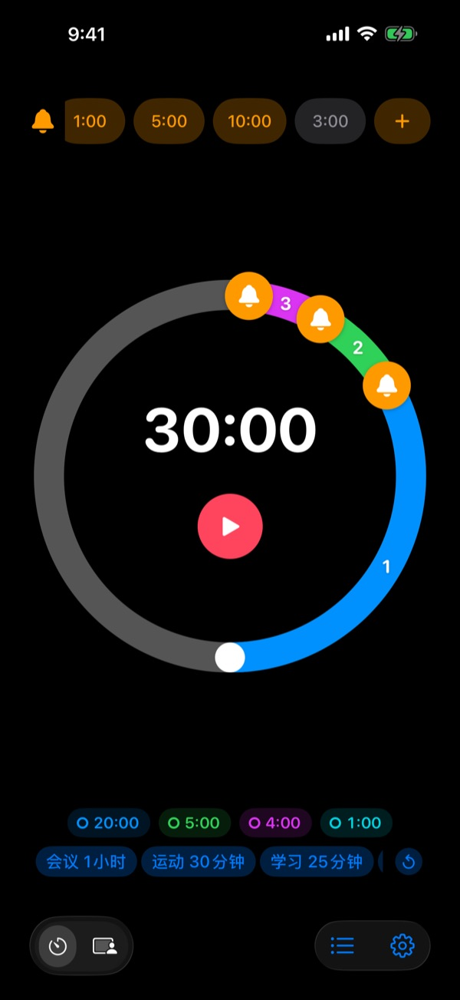
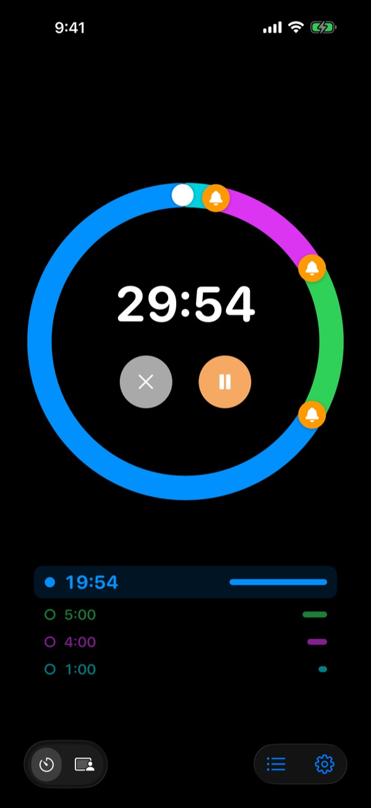
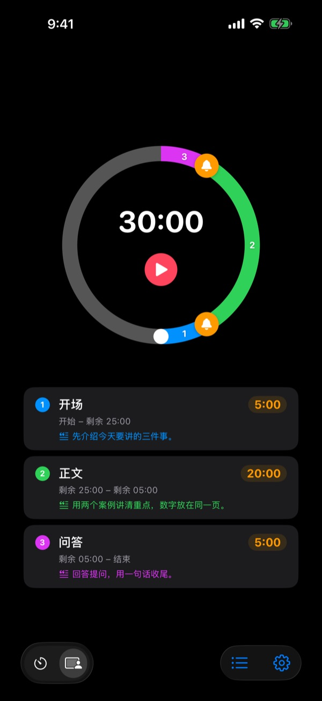
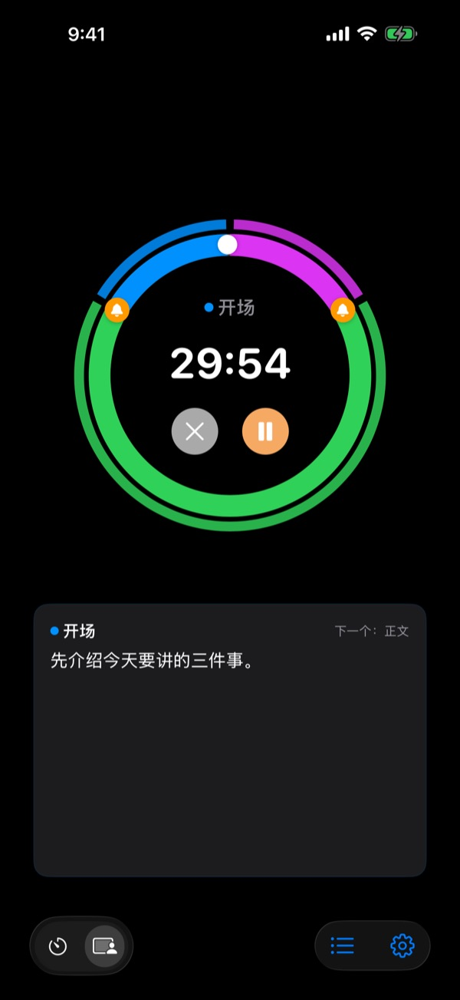

不是结束了才响，
而是结束之前
演讲结束前5分钟，会议收尾前3分钟。在你选好的每个时间点提前提醒，不用一直偷瞄时钟，专心做眼前的事。
提前提醒不限个数，完全免费。支持 iPhone、Apple Watch 和 Mac。

在这里试一试
选好时长和提醒，再按下红色按钮。1分钟只走1秒，到了提醒的时间会响一声告诉你。
计时器响的时候，是不是已经来不及了？
普通计时器要到0才响。演讲还没讲到结论就到点了，课还没总结就打铃了，会议什么都没定就被下一个日程挤走。你需要的不是“时间到了”，而是还来得及收尾时的那一声提醒。
结束之前，想提醒几次都行
把表盘上的铃铛拖到结束前10分钟、5分钟、1分钟，或任何你想要的位置。不限个数，每个提醒都可以写上自己的话，比如“开始收尾幻灯片”。
就算屏幕关着，锁定屏幕和灵动岛上也能看到剩余时间，Apple Watch 会在手腕上轻轻振动。

把演讲分成几段
开场5分钟、正文20分钟、问答5分钟，给每一段起名并写下讲稿。每次换段时都会用这一段的名字提醒你，时间分配自然就守住了。（Pro）

现在要说的话，就在屏幕上
进行中会大字显示当前这一段的讲稿和下一段。超时后不会停在0，而是继续计算你超出了多少。（Pro）

三步就能开始
- 1
设定时间
转动表盘，或点一下时间直接输入。一圈是60分钟，两圈是120分钟。
- 2
放好提醒
点上方的1:00、5:00等标签，或把铃铛拖到表盘上。
- 3
开始，然后放心
锁屏也没关系，到了设定的时间，iPhone 和 Apple Watch 都会提醒你。
大家常用的设置
- 20分钟演讲
- 前5分钟“进入结论”，前1分钟“致谢收尾”
- 50分钟的课
- 前10分钟“布置作业”，前3分钟“总结”
- 30分钟会议
- 前5分钟“确认决定事项”
- 普拉提、瑜伽课
- 按动作分段的分段模式（Pro）
- 25分钟学习
- 前5分钟，结束后休息
- 组间休息3分钟
- 前30秒“准备下一组”
- 1小时辅导或咨询
- 前15分钟、前5分钟
常用的设置存成模板，点一下就能调出来（记忆及以上）。也可以用快捷指令和 Siri 开始或停止计时。
提前提醒免费，需要它记住设置再付费
免费
- 提前提醒不限个数
- 每个提醒都能写自己的提示语
- 锁定屏幕和灵动岛上的实时活动
- 直到我确认为止持续提醒，结束时用闹钟响铃
- Apple Watch App 和 Mac 菜单栏
- 全部主题颜色
记忆 · Pro
- 记忆：把设置存为模板，点一下就开始
- 记忆：重新打开 App 时恢复上次的设置
- Pro：记忆的全部功能，加上分段模式（分段名称和讲稿）
- Pro：超时计时、记录和统计
记忆和 Pro 都可以选择按年订阅或一次买断永久使用。分段模式、超时计时和记录在付费前可以先试用几次。
没有广告。一张永久通行证即可解锁 Leeo 做的所有 App。
常见问题
提醒没有响。
大多是通知权限或专注模式的问题。请在 App 的设置 › 通知方式里查看通知权限。如果在用专注模式，请在 iOS 设置 › 专注模式里把 Rereminder 加为允许的 App。静音模式下只会振动。如果 Rereminder 在设置 › 通知 › 定时推送摘要里，提醒会被攒着晚到，请把它移出来。
静音模式下也能知道时间到了吗？
能。在设置里打开“结束时用闹钟响铃”，即使在静音模式或专注模式下也会大声响起。打开“直到我确认为止持续提醒”，会一直提醒到你在通知上按下停止或稍后提醒。
Apple Watch 不同步。
打开 App 的设置 › 我的设备，会显示缺了哪一步。请确认手表已与这台 iPhone 配对、手表上已安装 Rereminder，并且安装后在手表上打开过一次。之后即使手表 App 没开着，计时状态也会同步过去。
Mac 显示“未连接”。
“已连接”的意思是最近10分钟内那台 Mac 上开过这个 App，所以刚唤醒的 Mac 要过几分钟才会出现。两台设备需要登录同一个 iCloud 账户，并打开 iCloud 云盘。Mac 需要 macOS 26 或更高版本。
付了钱却没有解锁。
请在方案页面点按“恢复购买”，并确认登录的是付款时用的同一个 Apple 账户。买断的项目即使删除重装 App 或换了设备，也会恢复。
保存的模板被锁住了。
模板没有丢。没有记忆或 Pro 时它们会锁着留在那里，一旦购买就会立刻重新打开。
我想退款。
退款由 Apple 处理。请用付款的 Apple 账户在 reportaproblem.apple.com 申请。如果是因为出了问题，也请告诉我，我会修好，免得下一个人再遇到。
不安装能先试试吗？
在 iPhone 上打开 m1zz.github.io/rereminder，会以 App Clip 直接运行计时器。表盘和提醒都在，模板、分段模式和手表 App 在正式版里。
支持哪些设备？
iPhone 需要 iOS 26 或更高版本，Apple Watch 需要 watchOS 11.6 或更高版本，Mac 需要 macOS 26 或更高版本。暂不支持 iPad。App 支持24种语言。
我的数据存在哪里？
计时器、模板、分段名称、讲稿和记录都只存在设备里，删除 App 就会一起删除。App 只发送用于改进的匿名使用统计，具体内容写在隐私政策里。
有问题或建议，请发邮件到 leeo@kakao.com。通常2到3天内回复。